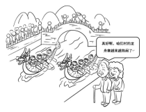

2023 年全国硕士研究生招生考试英语（一）
Section I Use of English
Directions:
Read the following text. Choose the best word(s) for each numbered blank and mark A, B, C or D on the ANSWER SHEET. (10 points)
Caravanserais were roadside inns that were built along the Silk Road in areas including China, North Africa and the Middle East. They were typically 1 outside the walls of a city or village and were usually funded by local governments or 2 .
This word “Caravanserais” is a 3 of the Persian words “Karvan”, which means a group of travellers or a caravan, and “saray”, a palace or enclosed building. The term caravan was used to 4 groups of people who travelled together across the ancient network for safety reasons, 5 merchants, travellers or pilgrims.
From the 10th century onwards, as merchant and travel routes became more developed, the 6 of caravanserais increased and they served as a safe place for people to rest at night. Travellers on the Silk Road 7 the possibility of being attacked by thieves or being 8 to extreme weather conditions. For this reason, caravanserais were strategically placed 9 they could be reached in a day’s travel time.
Caravanserais served as an informal 10 point for the various people who travelled the Silk Road. 11 , these structures became important centers for cultural 12 and interaction, with travellers sharing their cultures, ideas and beliefs, 13 taking knowledge with them, greatly 14 the development of several civilisations.
Caravanserais were also an important marketplace for commodities and 15 in the trade of goods along the Silk Road. 16 , it was frequently the first stop for merchants looking to sell their wares and 17 supplies for their own journeys. It is 18 that around 12,000 to 15,000 caravanserais were built along the Silk Road, 19 only about 3,000 are known to remain today, many of which are in 20 .
Section II Reading Comprehension
Part A
Directions:
Read the following four texts. Answer the questions after each text by choosing A, B, C or D. Mark your answers on the ANSWER SHEET. (40 points)
Text 1
The weather in Texas may have cooled since the recent extreme heat, but the temperature will be high at the State Board of Education meeting in Austin this month as officials debate how climate change is taught in Texas schools.
Pat Hardy, who sympathises with the views of the energy sector, is resisting proposed changes to science standards for pre-teen pupils. “There are as many scientists working against all the panic of global climate change as there are those who are pushing it,” she claims. “Texas is an energy state and we need to recognise that. You need to remember where your bread is buttered.”
Most scientists and experts sharply dispute Hardy’s views. Board members like her “casually dismiss the career work of scholars and scientists as just another misguided opinion,” says Dan Quinn, senior communications strategist at the Texas Freedom Network, a non-profit group that monitors public education.
Such debates reflect fierce discussions across the US, as researchers, policymakers, teachers and students step up demands for a greater focus on teaching about the facts of climate change in schools.
A study last year by the National Center for Science Education, a non-profit group of scientists and teachers, looking at how state public schools across the country address climate change in science classes, gave barely half of US states a grade B+ or higher. Among the 10 worst performers were some of the most populous states, including Texas, which was given the lowest grade (F) and has a disproportionate influence because its textbooks are widely sold elsewhere.
Glenn Branch, the center’s deputy director, cautions that setting state-level science standards is only one limited benchmark in a country that decentralises decisions to local school boards. Even if a state is considered a high performer in its science standards, “that does not mean it will be taught”, he says.
Another issue is that, while climate change is well integrated into some subjects and at some ages — such as earth and space sciences in high schools — it is not as well represented in curricula for younger children and in subjects that are more widely taught, such as biology and chemistry. It is also less prominent in many social studies courses.
Branch points out that, even if a growing number of official guidelines and textbooks reflect scientific consensus on climate change, unofficial educational materials that convey more slanted perspectives are being distributed to teachers. They include materials sponsored by libertarian think-tanks and energy industry associations.
21. In Paragraph 1, the weather in Texas is mentioned to ____
22. What does Quinn think of Hardy?
23. The study mentioned in Paragraph 5 shows that ____
24. According to Branch, state-level science standards in the US ____
25. It is implied in the last paragraph that climate change teaching in some schools ____
Text 2
Communities throughout New England have been attempting to regulate short-term rentals since sites like Airbnb took off in the 2010s. Now, with record-high home prices and historically low inventory, there’s an increased urgency in such regulation, particularly among those who worry that developers will come in and buy up swaths of housing to flip for a fortune on the short-term rental market.
In New Hampshire, where the rental vacancy rate has dropped below 1 percent, housing advocates fear unchecked short-term rentals will put further pressure on an already strained market. The State Legislature recently voted against a bill that would’ve made it illegal for towns to create legislation restricting short-term rentals.
“We are at a crisis level on the supply of rental housing,” said Nick Taylor, executive director of the Workforce Housing Coalition of the Greater Seacoast. Without enough affordable housing in southern New Hampshire towns, “employers are having a hard time attracting employees, and workers are having a hard time finding a place to live,” Taylor said.
However, short-term rentals also provide housing for tourists, pointed out Ryan Castle, CEO of a local association of realtors. “A lot of workers are servicing the tourist industry, and the tourism industry is serviced by those people coming in short term,” Castle said, “and so it’s a cyclical effect.”
Short-term rentals themselves are not the crux of the issue, said Keren Horn, an expert on affordable housing policy. “I think individuals being able to rent out their second home is a good thing. If it’s their vacation home anyway, and it’s just empty, why can’t you make money off it?” Horn said. Issues arise, however, when developers attempt to create large-scale short-term rental facilities — de facto hotels — to bypass taxes and regulations. “I think the question is, shouldn’t a developer who’s really building a hotel, but disguising it as not a hotel, be treated and taxed and regulated like a hotel?” Horn said.
At the end of 2018, Governor Charlie Baker of Massachusetts signed a bill to rein in those potential investor-buyers. The bill requires every rental host to register with the state, mandates they carry insurance, and opens the potential for local taxes on top of a new state levy. Boston took things even further, requiring renters to register with the city’s Inspectional Services Department.
Horn said similar registration requirements could benefit struggling cities and towns, but “if we want to make a change in the housing market, the main one is we have to build a lot more.”
26. Which of the following is true of New England?
27. The bill mentioned in Paragraph 2 was intended to ____
28. Compared with Castle, Taylor is more likely to support ____
29. What does Horn emphasize in Paragraph 5?
30. Horn holds that imposing registration requirements is ____
Text 3
If you’re heading for your nearest branch of Waterstones, the biggest book retailer in the UK, in search of the Duchess of Sussex’s new children’s book The Bench, you might have to be prepared to hunt around a bit; the same may be true of The President’s Daughter, the new thriller by Bill Clinton and James Patterson. Both of these books are published next week by Penguin Random House (PRH), a company currently involved in a stand-off with Waterstones.
The problem began late last year, when PRH confirmed that it had introduced a credit limit with Waterstones “at a very significant level”. The trade magazine The Bookseller reported that Waterstones branch managers were being told to remove PRH books from prominent areas such as tables, display spaces and windows, and were “quietly retiring them to their relevant sections”.
PRH declined to comment on the issue, but a spokesperson for Waterstones told me: “Waterstones are currently operating with reduced credit terms from PRH, the only publisher in the UK to place any limitations on our ability to trade. We are not boycotting PRH titles but we are doing our utmost to ensure that availability for customers remains good despite the lower overall levels of stock.” “We are hopeful with our shops now open again that normality will return and that we will be allowed to buy appropriately. Certainly, our shops are exceptionally busy. The sales for our May Books of the Month surpassed any month since 2018.”
In the meantime, PRH authors have been the losers. Big-name PRH authors may suffer a bit, but it’s those mid-list authors, who normally rely on Waterstones staff’s passion for promoting books by lesser-known writers, who will be praying for an end to the dispute.
It comes at a time when authors are already worried about the consequences of the proposed merger between PRH and another big publisher, Simon & Schuster — the reduction in the number of unaligned UK publishers is likely to lead to fewer bidding wars, lower advances, and more conformity in terms of what is published.
“This is all part of a wider change towards concentration of power,” says literary agent Andrew Lownie. “The publishing industry talks about diversity in terms of authors and staff but it also needs a plurality of ways of delivering intellectual contact, choice and different voices. After all, many of the most interesting books in recent years have come from small publishers.”
We shall see whether that plurality is a casualty of the current need among publishers to be big enough to take on all-comers.
31. The author mentions two books in Paragraph 1 to present ____
32. Why did Waterstones shops retire PRH books to their relevant sections?
33. What message does the spokesperson for Waterstones seem to convey?
34. What can be one consequence of the current dispute?
35. Which of the following statements best represents Lownie’s view?
Text 4
Scientific papers are the recordkeepers of progress in research. Each year researchers publish millions of papers in more than 30,000 journals. The scientific community measures the quality of those papers in a number of ways, including the perceived quality of the journal (as reflected by the title’s impact factor) and the number of citations a specific paper accumulates. The careers of scientists and the reputation of their institutions depend on the number and prestige of the papers they produce, but even more so on the citations attracted by these papers.
Citation cartels, where journals, authors, and institutions conspire to inflate citation numbers, have existed for a long time. In 2016, researchers developed an algorithm to recognize suspicious citation patterns, including groups of authors that disproportionately cite one another and groups of journals that cite each other frequently to increase the impact factors of their publications. Recently, another expression of this predatory behavior has emerged: so-called support service consultancies that provide language and other editorial support to individual authors and to journals sometimes advise contributors to add a number of citations to their articles.
The advent of electronic publishing and authors’ need to find outlets for their papers resulted in thousands of new journals. The birth of predatory journals wasn’t far behind. These journals can act as milk cows where every single article in an issue may cite a specific paper or a series of papers. In some instances, there is absolutely no relationship between the content of the article and the citations. The peculiar part is that the journal that the editor is supposedly working for is not profiting at all — it is just providing citations to other journals. Such practices can lead an article to accrue more than 150 citations in the same year that it was published.
How insidious is this type of citation manipulation? In one example, an individual — acting as author, editor, and consultant — was able to use at least 15 journals as citation providers to articles published by five scientists at three universities. The problem is rampant in Scopus, a citation database, which includes a high number of the new “international” journals. In fact, a listing in Scopus seems to be a criterion to be targeted in this type of citation manipulation.
Scopus itself has all the data necessary to detect this malpractice. Red flags include a large number of citations to an article within the first year. And for authors who wish to steer clear of citation cartel activities: when an editor, a reviewer, or a support service asks you to add inappropriate references, do not oblige and do report the request to the journal.
36. According to Paragraph 1, the careers of scientists can be determined by ____
37. The support service consultancies tend to ____
38. The function of the “milk cow” journals is to ____
39. What can be learned about Scopus from the last two paragraphs?
40. What should an author do to deal with citation manipulators?
Part B
Directions:
The following paragraphs are given in a wrong order. For Questions 41-45, you are required to reorganize these paragraphs into a coherent text by choosing from the list A-H and filling them into the numbered boxes. Paragraphs A, E and H have been correctly placed. Mark your answers on the ANSWER SHEET. (10 points)
A) This year marks the 150th anniversary of a series of Yellowstone photographs by the renowned landscape photographer William Henry Jackson. He captured the first-ever shots of iconic landmarks such as the Tetons, Old Faithful and the Colorado Rockies. Jackson snapped them on a late 19th-century expedition through the Yellowstone Basin that was conducted by the head of the U.S. Geological and Geographical Survey of the Territories, Ferdinand V. Hayden. The team included a meteorologist, a zoologist, a mineralogist, and an agricultural statistician.
B) Two centuries ago, the idea of preserving nature, rather than exploiting it, was a novel one to many U.S. settlers. One of the turning points in public support for land conservation efforts — and recognizing the magnificence of the Yellowstone region in particular — came in the form of vivid photographs.
C) As an effective Washington operator, Hayden sensed that he could capitalize on the expedition’s stunning visuals. He asked Jackson to print out large copies and distributed them, along with reproductions of Moran’s paintings, to each member of Congress. “The visualization, particularly those photographs, really hit home that this is something that has to be protected,” says Murphy.
D) Throughout the trip, Jackson juggled multiple cameras and plate sizes using the “collodion process” that required him to coat the plates with a chemical mixture, then expose them and develop the resulting images with a portable darkroom. The crude technique required educated guesses on exposure times, and involved heavy, awkward equipment — several men had to assist in its transportation. Despite these challenges, Jackson captured dozens of striking photos, ranging from majestic images like his now-famous snapshot of Old Faithful, to casual portraits of expedition members at the camp. While veterans of previous expeditions wrote at length about stunning trail sights, these vivid photographs were another thing entirely.
E) The journey officially began in Ogden, Utah on June 8, 1871. Over nearly four months, dozens of men made their way on horseback into Montana and traversed along the Yellowstone River and around Yellowstone Lake. That fall, they concluded the survey in Fort Bridger, Wyoming.
F) Though Native Americans (and later miners and fur trappers) had long recognized the area’s riches, most Americans did not. That’s why Hayden’s expedition aimed to produce a fuller understanding of the Yellowstone River region, from its hot springs and waterfalls to its variety of flora and fauna. In addition to the entourage of scientists, the team also included artists: Painter Thomas Moran and photographer William Henry Jackson were charged with capturing this astounding natural beauty and sharing it with the world.
G) The bill proved largely popular and sailed through Congress with large majorities in favor. In quick succession, the Senate and House passed legislation protecting Yellowstone in early 1872. That March, President Ulysses S. Grant signed an act into law that established Yellowstone as the world’s first national park. While some locals opposed to the designation, the decision was largely accepted — and Jackson’s photos played a key role in the fight to protect the area. “I don’t believe that the legal protection would have happened in the timeframe that it did without those images,” says Heather Hansen, journalist and author of Prophets and Moguls, Rangers and Rogues, Bison and Bears:100 Years of the National Park Service.
H) Perhaps most importantly, the images provided documentary evidence of the park’s sights that later made its way to government officials. Weeks after completing the expedition, Hayden collected his team’s observations into an extensive report aimed at convincing senators and representatives, along with colleagues at government agencies like the Department of the Interior, that Yellowstone ought to be preserved.
Part C
Directions:
Read the following text carefully and then translate the underlined segments into Chinese. Write your answers on the ANSWER SHEET. (10 points)
There has been some exploration around the use of AI in digital marketing. For example, AI can be used to analyse what type of advertising content or copy would be appropriate to ‘speak’ to a specific target customer group by revealing information about trends and preferences through the analysis of big data. (46) AI can also be used to identify the lifestyle choices of customers regarding their hobbies, favourite celebrities, music choices, and fashions to provide unique content in marketing messages put out through social media. At the same time AI can also be used to generate content for social media posts and chat sites. AI can also provide a bridge between the need of the brand to communicate emotionally with the customer and identifying their rapidly changing needs.
The main disadvantage of using AI to respond to customers is that there are concerns about trusting personal interactions to machines, which could lead not only to the subsequent loss of interpersonal connections, but also to a decrease in marketing personnel. (47) Some believe that AI is negatively impacting on the marketer’s role by reducing creativity and removing jobs, but they are aware that it is a way of reducing costs and creating new information. By allowing AI to develop content some brand marketers may find that they are losing control over the brand narrative. (48) Algorithms that are used to simulate human interactions are creating many of these concerns, especially as no-one is quite sure what the outcomes of using AI to interact with customers will be.
For AI to be successful, data needs to be accessible, but the use of personal data is becoming more regulated and the automated sharing of data is becoming more difficult. (49) If customers are not willing to share data, AI will be starved of essential information and will not be able to function effectively or employ machine learning to improve its marketing content and communication. Therefore, unless customers are prepared to sign release agreements, the use of AI may become somewhat restricted in the future. Not only can AI help to create the marketing content, but it can also provide a non-intrusive way of delivering the content to the target customers. Data can be gathered on where the customer can be engaged, such as location, devices used, website interactions, and sites visited, to display marketing messages in appropriate forms, including emails, social media posts, pop-up advertisements, and banners at an appropriate frequency. (50) The non-intrusive delivery of the marketing messages in a way that is sensitive to the needs of the target customer is one of the critical challenges to the digital marketer.
Understanding humans may be complicated, but we reveal a considerable amount about what appeals to us through our browsing history.
Section III Writing
Part A
51. Directions:
Write a notice to recruit a student for Prof. Smith’s research project on campus sports activities. Specify the duties and requirements of the job.
You should write about 100 words on the ANSWER SHEET. Do not use your own name at the end of the notice; use “Li Ming” instead. (10 points)
Part B
52. Directions:
Write an essay of 160-200 words based on the picture below. In your essay, you should
1) describe the picture briefly,
2) interpret the implied meaning, and
3) give your comments.
You should write neatly on the ANSWER SHEET. (20 points)
